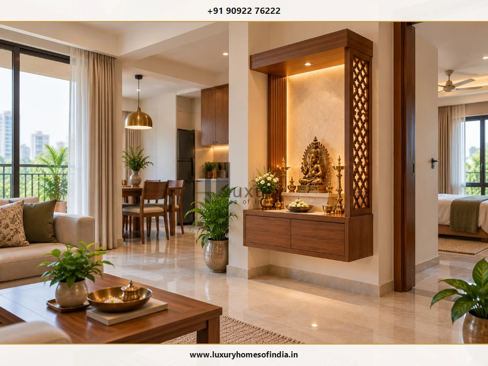
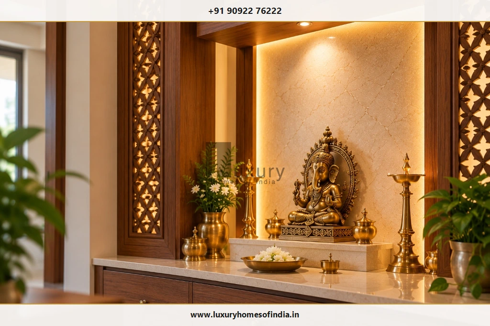
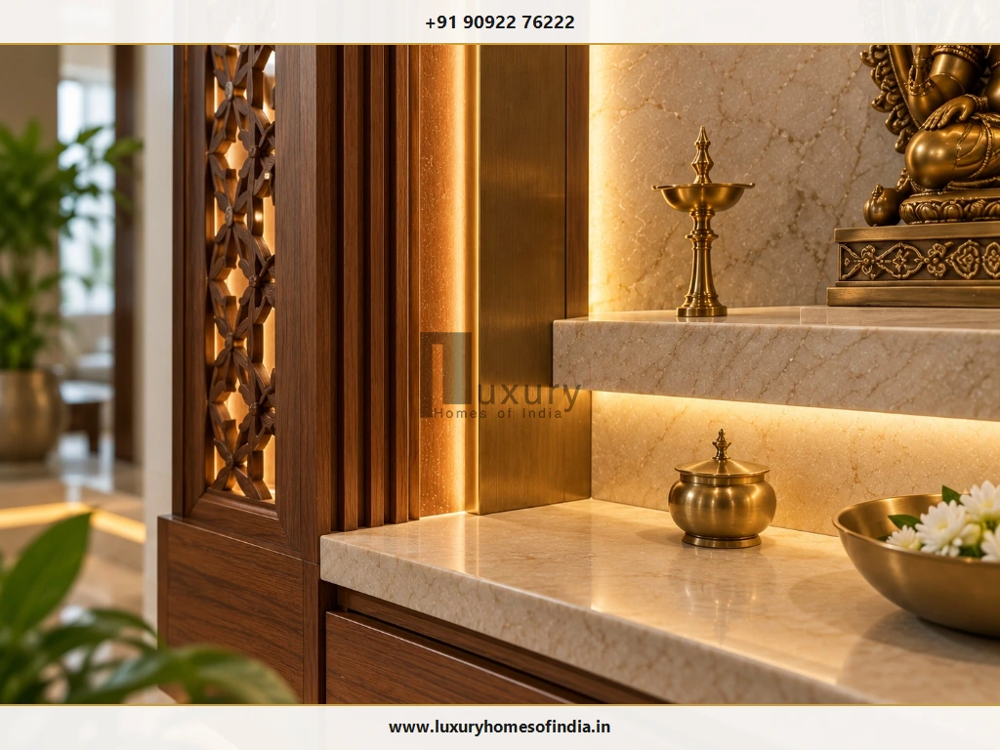
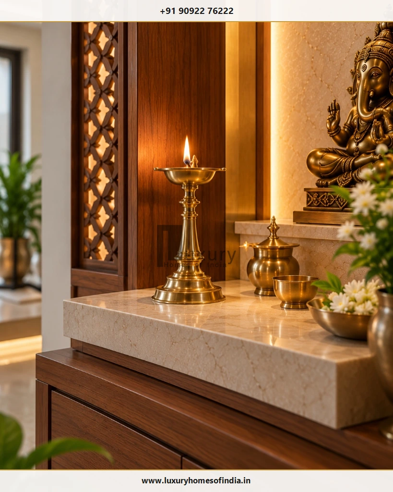

Ventilation and Lighting for Pooja Rooms: A Practical Guide for Indian Homes
A well-designed pooja room needs more than a beautiful mandir. Good ventilation and carefully planned lighting help make a prayer space comfortable, practical to maintain and safer to use every day. Discover how to balance natural airflow, mechanical exhaust routes, warm LED illumination, and traditional diya safety across apartments, independent houses, and luxury villas.

Executive Summary: Functional Comfort Beyond Aesthetics
The right approach to pooja room design depends on whether the mandir sits in an apartment niche, a wall-mounted cabinet, or a dedicated room in an independent house or villa. Where natural airflow is available, it helps disperse incense smoke and heat cleanly. Enclosed prayer spaces require a considered ventilation strategy tailored to the actual room layout.
- Airflow Route: Natural cross-ventilation or dedicated mechanical exhaust discharging to the exterior.
- Layered Illumination: Warm white LEDs (2700K–3000K) balancing ambient light with focused altar fixtures.
- Diya Safety: Heat-resistant stone counters, minimum 18-inch flame clearances, and accessible controls.
- Climate Resilience: Addressing wall moisture and humidity before fixing custom joinery or stone backdrops.
A well-designed pooja room needs more than a beautiful mandir. Good ventilation and carefully planned lighting help make a prayer space comfortable, practical to maintain and safer to use every day. The right approach depends on whether the mandir sits in an apartment niche, a wall-mounted cabinet or a dedicated room in an independent house or villa.
Where natural airflow is available, it can help disperse incense smoke and heat. Enclosed prayer spaces may need a different ventilation strategy, assessed for the actual room layout. For lighting, a combination of comfortable general illumination and focused altar lighting usually provides more flexibility than decorative lights alone. Warm LED lighting can complement wood, stone and brass, while careful fixture placement helps reduce glare and unwanted shadows.
Traditional diyas require particular attention to stable surfaces, combustible materials and clearance from electrical fittings. In Chennai and other warm, humid Indian cities, the design should also account for weather exposure, moisture problems and maintenance access. Planning these details alongside the altar, cabinetry and electrical layout helps create a prayer space that works as well as it looks. For related spatial guidelines, explore our architectural analysis on pooja room dimensions and layout and pooja room design and placement.
Table of Contents
1. Why Ventilation Matters in a Pooja Room
Incense, camphor and traditional oil lamps can introduce smoke, particles and heat into a room. When air circulation is inadequate, these can linger around the mandir and nearby furnishings, gradually depositing oily soot onto carved wood, marble, ceiling finishes, and drapery.

A comprehensive ventilation strategy should consider:
- Air Intake: Where fresh air enters the room.
- Air Circulation Path: How air moves through the space.
- Dispersal Route: Where smoke and warm air can disperse.
- Spatial Connection: Whether the room is enclosed or connected to a larger living area.
- Closed Condition Dynamics: How the arrangement changes when windows and doors are closed.
Natural ventilation
Where the layout permits, an appropriately placed window or external opening can support air movement. Its effectiveness depends on the opening, surrounding conditions and the availability of a suitable airflow path. Consider privacy, rain exposure, direct sunlight and the position of the altar before finalising the opening. Ensure that incoming gusts will not blow directly across diya flames, which can cause erratic flickering or fire hazards. For more site-wide passive cooling strategies, see our guide on ventilation and natural light in house design.
Mechanical ventilation
An internal prayer room may have limited access to outdoor air. In such cases, an appropriately designed mechanical ventilation solution may be worth considering. The fan, duct route, discharge location, noise and electrical installation should be assessed for the actual space. Moving smoke into another enclosed room is not an adequate substitute for a suitable discharge route; exhaust air should always be ducted directly to the building exterior.
Ventilation in a mandir cabinet
A cabinet-style mandir should not be treated as a sealed enclosure for burning incense or an open-flame diya. Keep flames away from combustible materials and allow smoke to disperse into a suitably ventilated space. Never burn a diya or incense inside a closed cupboard. If a safe arrangement cannot be achieved, avoid using an open flame in that location.
2. Planning Ventilation for Chennai Homes
The best solution depends on the type of residence and where the prayer space sits within it. Chennai's tropical maritime climate, characterized by high relative humidity (often exceeding 75%) and warm temperatures year-round, requires specific attention to airflow and moisture management.
Apartment mandirs
A compact mandir in a living or dining room can often use the surrounding room's airflow, provided that the room itself is suitably ventilated. Avoid enclosing the unit so tightly that smoke becomes trapped. If incense smoke repeatedly accumulates, reassess the location and ventilation rather than relying on decorative openings alone. Detailed planning ideas for flats can be found in our dedicated feature on pooja room design for apartments in Chennai.
Dedicated pooja rooms
Review the availability of windows, external openings or a suitable mechanical ventilation route during the architectural planning stage. If the room is entirely internal, discuss the options with the architect or building-services professional before cabinetry and finishes are finalised. High-level transom louver vents or ceiling-mounted exhaust ducts can evacuate rising warm smoke efficiently.
Villas and independent houses
A dedicated prayer room may offer more flexibility in opening placement and layout. Coordinate ventilation with privacy, the altar, adjoining rooms, weather exposure and the home's overall design. In coastal Tamil Nadu, orienting vents to capture prevailing sea breezes from the South and East while shielding openings from monsoon driving rains provides reliable passive cooling. For standalone homes, review our guides on pooja room design for independent houses and luxury villa pooja room design in Chennai.
Address Dampness Before Installing Finishes
Investigate seepage, leakage and persistent dampness before installing wooden cabinetry, laminates or decorative wall panels. Finishes should not conceal an underlying moisture problem. Resolve its cause and allow the affected area to be appropriately assessed and dried before installation.
3. Choosing the Right Lighting for a Pooja Room
A useful lighting plan combines general room illumination with light directed towards the altar. Decorative lighting can add atmosphere, but it should not be the only source of illumination.

Warm LED lighting
Warm white LEDs (typically 2700K to 3000K) are a popular option for a calm, inviting atmosphere. They can complement wood, brass, natural stone and traditional decorative details, highlighting the rich golden undertones of idols and ritual vessels. Choose fixtures based on the room, the finish palette and the intended use rather than assuming that one colour temperature suits every mandir.
Focused altar lighting
A directional fixture can highlight idols, a central panel or the prayer platform. Position it to avoid shining directly into the eyes of someone praying. Check for harsh shadows, distracting reflections and glare from polished surfaces like high-gloss marble or polished granite slabs. A narrow-beam spotlight with an anti-glare honeycomb baffle or snoot delivers focused accent lighting cleanly.
Concealed LED backlighting
An LED strip behind a panel or within a mandir frame can create a soft halo effect. It works particularly well when the design benefits from a subtle distinction between the altar and the surrounding wall, such as behind an onyx slab, a carved Corian screen, or a backlit wooden jaali. Keep drivers, connections and wiring accessible for inspection and servicing. Ensure the selected components and installation are suitable for their location and safely separated from flames and excessive heat.
General room lighting
Provide enough illumination for arranging offerings, cleaning, opening storage and moving safely around the room. A balanced combination of general lighting and altar lighting is usually more adaptable than relying entirely on backlighting or a decorative spotlight. For comprehensive electrical infrastructure rules, refer to our homeowner guide on best electrical wiring for a new house in India.
4. Using Natural Light in a Prayer Space
Natural daylight can make a pooja room feel more open and visually connected to the home. Where suitable openings are possible, they may also contribute to natural airflow.
Before introducing a window, consider five essential factors:
Privacy
Decide how the opening relates to the altar and adjoining spaces, ensuring neighbours cannot peer directly into intimate prayer rituals.
Sunlight and Glare
Check whether direct western or midday sun will create thermal discomfort, bleach wood finishes, or produce harsh reflections on polished stone.
Weather Exposure
Detail the opening with proper sills, weatherhoods, or louvered sunshades to manage heavy monsoon rains and prevent moisture ingress.
Maintenance
Make the window, insect mesh, and surrounding wall surfaces easily accessible for routine cleaning and dusting.
Lamp Placement & Drafts
Avoid placing openings where strong outdoor drafts or cross-breezes could destabilise an open diya flame or blow sparks onto fabric furnishings.
A window is not essential in every pooja room. An internal prayer space can still be well designed, provided that artificial lighting and the ventilation strategy suit the room.
5. Lighting Ideas for Different Mandir Styles
Every mandir architectural genre presents unique lighting opportunities and constraints. Comparing your structural style helps you tailor fixtures to materials.

Traditional wooden mandir
Use warm ambient lighting (2700K) to bring out natural wood grain, teak luster, and intricate hand-carved details. Add focused light where it improves visibility without making the design visually busy. Crucially, keep open flames away from wooden surfaces, corbels, and decorative overhead elements. If you love traditional vernacular styles, see our study on Chettinad-style pooja room design.
Marble or natural-stone mandir
Carefully positioned light can emphasise the stone's texture, translucent veining, and carved relief details. Check the effect from the usual prayer position to avoid distracting reflections or hot spots on polished surfaces. A stable, heat-resistant surface should be provided wherever traditional oil lamps are used.
Contemporary wall-mounted mandir
A simple combination of general room lighting, concealed backlighting behind the back panel, and a modest altar fixture can work well in a compact setting. Plan the wiring before cabinetry installation and retain access to components that may require servicing. For style selection tips, read our comparison between traditional and contemporary mandir design.
Luxury villa pooja room
A larger prayer room may accommodate multiple lighting layers, such as general ambient cove illumination, focused altar lighting, decorative brass hanging pendant lights, and discreet floor wash lights. The aim is to create a coherent and functional space, not simply to maximise the number of light sources.
Small apartment pooja corner
A well-positioned room light and a modest altar light may be sufficient. Avoid unnecessary strips and multiple spotlights that create glare or visual clutter in tight corners. The best solution is often the one that provides comfortable illumination with the fewest complications.
6. Where Should Pooja Room Lights Be Placed?
Coordinate fixture positions with the altar, cabinetry, electrical drawings and the usual position of the person praying. Avoid designing lighting solely from floor plans without visualizing eye levels.
| Lighting Element | Main Purpose | Planning Consideration |
|---|---|---|
| Ceiling or general light | Everyday visibility for prayer, cleaning, and movement | Avoid harsh glare and dark working areas; ensure diffused, balanced distribution. |
| Altar light | Illuminates idols and the prayer platform | Check shadows and direct eye-level glare; angle the beam towards the idols, not the devotee. |
| Concealed backlighting | Creates a soft decorative glow around backdrops | Allow servicing access to drivers and connections; house drivers in ventilated cabinetry. |
| Shelf or cabinet lighting | Illuminates selected storage areas and niches | Confirm suitability for the installation and safe physical separation from open flames. |
| Switches and electrical access | Makes operation and maintenance convenient | Coordinate with the room entrance and final electrical plan; keep switches at 48 inches AFF. |
Mark the intended fixture positions before wall panels and cabinetry are installed. Review the finished arrangement from the normal prayer position—both seated and standing—not only from the entrance door.
7. Safety Around Diyas, Incense and Electrical Fittings
Traditional lamps are an important part of worship in many households. Their placement should be planned around the open flame, the surrounding materials and the way the room is used.

Follow these essential fire-safety precautions:
- Stable Surfaces: Place diyas on stable, non-combustible, heat-resistant surfaces such as granite, quartz, marble, or solid brass plates.
- Combustible Clearance: Keep flames away from curtains, hanging garlands, fresh or dried flowers, paper, fabric, and wooden cabinetry.
- Electrical Isolation: Keep wiring, LED strips, low-voltage channels, and electrical fittings safely away from direct flame and excessive rising heat.
- Active Supervision: Never leave a burning diya, camphor flame, or incense stick unattended.
- Extinguish Flames: Extinguish flames before leaving the room unattended or going to sleep.
- Child Safety: Keep matches, camphor tablets, and lighters stored in upper child-proof drawers away from young children.
- Smoke Evacuation: Ensure that smoke can disperse into a suitably ventilated space rather than collecting under shelves.
- Traffic Clearance: Do not place lamps where doors, curtains, moving pets, or passing occupants could accidentally knock them over.
Fire Safety Guidance Benchmark
The United States Fire Administration's candle-safety guidance reinforces the importance of keeping open flames away from combustible materials and extinguishing them when leaving the area. Apply appropriate fire-safety precautions to traditional lamps as well.
Where an open flame cannot be accommodated safely—such as within an enclosed cabinet or an unmonitored hallway niche—a flameless LED lamp or warm electric diya may be an alternative for decorative illumination. However, it does not replace a traditional diya where the household specifically wishes to perform sacred fire rituals.
8. Choosing Lighting Colour, Brightness and Controls
The right lighting depends on the room's dimensions, finishes, fixture specifications and intended activities.
Warm White (2700K – 3000K)
Warm white light creates a softer, reverent atmosphere and enhances natural wood grains, polished brass, and traditional stone finishes.
Neutral White (3500K – 4000K)
Neutral white suits contemporary spaces where crisp clarity and true colour rendering of floral arrangements and murals are desired.
Reduce glare
Excessively bright or poorly positioned fixtures can make a small room uncomfortable and visually fatiguing. Diffused lighting, indirect coves, frosted diffusers, and carefully directed spot fixtures provide a far superior atmosphere compared to increasing lumen brightness indiscriminately.
Separate the lighting controls
Where practical, place general room lighting and decorative or altar lighting on separate physical switches or dimming channels. This gives the household maximum flexibility: bright general light for morning sweeping and offering preparation, and subdued, intimate altar accent lighting during evening meditation and quiet prayer. Choose light output based on room scale, tasks, and fixture beam angles rather than copying a generic brightness number.
9. Coordinating Materials, Cabinetry and Ventilation
The mandir's finishes should be considered alongside lighting, airflow, electrical access and the placement of traditional lamps. Poor coordination between joinery and electrical conduits creates costly site revisions.
- Wood and engineered panels: Select finishes appropriate for the intended installation. Kiln-dried teak, rosewood, and marine-grade plywood with natural veneers are ideal. Keep them safely away from direct flame and excessive heat, and provide discreet access panels for concealed electrical transformers.
- Marble and natural stone: Stone makes an exceptionally durable, non-combustible altar surface or backdrop. Ensure that lamp platforms are perfectly level and stable, and ensure that marble is sealed against oil and turmeric absorption.
- Laminates and decorative panels: Keep combustible laminate finishes clear of open flames. Concealed wiring channels within paneling must be run through fire-retardant conduits and remain accessible for qualified electrical inspection.
- Glass and jaali screens: Decorative CNC-cut wooden, brass, or stone jaalis can define a prayer space elegantly without building solid walls. However, they should not obstruct necessary airflow paths or create inaccessible crevices that trap oily dust.
10. Common Ventilation and Lighting Mistakes to Avoid
Avoid these frequent planning missteps when designing your home mandir:
Sealing the Mandir Completely
Never use a closed cabinet as an enclosure for burning incense or diyas. Smoke and heat will rapidly damage the cabinet and pose a fire hazard.
Relying Only on Decorative Lighting
A backlit panel may look striking, but it cannot illuminate the room for everyday cleaning, offering arrangements, or reading scriptures.
Placing a Diya Beneath a Light Fixture
Open flames and rising convection heat can melt light casings, scorch insulation, or damage overhead acrylic diffusers.
Hiding Electrical Drivers Permanently
Sealing LED drivers behind tiled or glued panels makes driver replacement destructive and expensive when components age.
Assuming a Grille Provides Sufficient Airflow
Assess the entire airflow route and actual room conditions; decorative perforations cannot displace heavy smoke without a pressure differential.
Exhaust Fan Without Exterior Discharge
The exhaust installation should move air outdoors through a dedicated duct, not simply dump soot and smoke into an adjoining bedroom or utility space.
Concealing Dampness Behind Cabinetry
Covering damp masonry with wood paneling creates mold, warped veneers, and musty odours. Waterproof and dry the wall fully first.
Overlighting a Compact Room
Installing high-wattage floodlights in a small prayer alcove washes out altar textures, creates severe glare, and destroys the peaceful atmosphere.
11. Pooja Room Ventilation and Lighting Checklist
Use this pre-execution checklist before approving electrical layouts, cabinetry shop drawings, and finish installations: